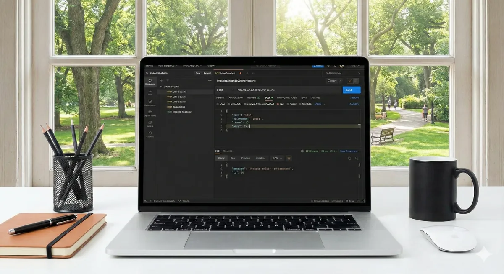

Desenvolvimento de API REST

Blendly
API back-end desenvolvida em Node.js e Express para cadastro de usuários, com validação de dados JSON e persistência segura em banco SQLite. O projeto aplica boas práticas de arquitetura, endpoints RESTful, tratamento do protocolo HTTP e persistência assíncrona com async/await.
Problema
Faltava uma base de back-end sólida, seguindo boas práticas REST, para cadastro de usuários.
Decisão técnica
API construída em Node.js e Express, com validação de dados JSON e persistência assíncrona (async/await) em SQLite, seguindo uma arquitetura RESTful padronizada.
Resultado
API funcional com endpoints RESTful documentados no próprio código, pronta para servir de base a outros projetos.